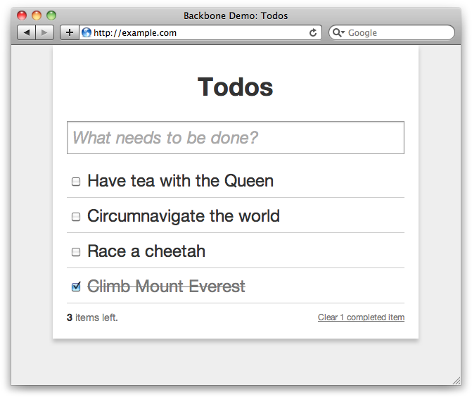

{% include JB/setup %}
{% raw %}
<div>
<div class="book" title="Building a To-Do List"><div class="book"><div class="book"><div class="book"><h1 class="title1"><a id="I_sect112_d1e13046" class="calibre1"></a>Building a To-Do List</h1></div></div></div><p class="calibre3"><a id="index-566L000KJ0G" class="calibre1"></a><a id="index-345P463CV7I" class="calibre1"></a>Let’s put what we’ve learned about Backbone into practice
    with a simple to-do list application. We want the user to be able to CRUD
    to-dos, and we want items to be persisted between page refreshes. You can
    build the application using the examples below, or see the finished
    application in <span class="calibre1"><em class="calibre4">assets/ch12/todos</em></span>.</p><p class="calibre3">The initial page structure looks like the following; we’re loading
    in CSS, JavaScript libraries, and our Backbone application contained in
    <span class="calibre1"><em class="calibre4">todos.js</em></span>:</p><pre class="screen">&lt;html&gt;
&lt;head&gt;
  &lt;link href="todos.css" media="all" rel="stylesheet" type="text/css"/&gt;
  &lt;script src="lib/json2.js"&gt;&lt;/script&gt;
  &lt;script src="lib/jquery.js"&gt;&lt;/script&gt;
  &lt;script src="lib/jquery.tmpl.js"&gt;&lt;/script&gt;
  &lt;script src="lib/underscore.js"&gt;&lt;/script&gt;
  &lt;script src="lib/backbone.js"&gt;&lt;/script&gt;
  &lt;script src="lib/backbone.localstorage.js"&gt;&lt;/script&gt;
  &lt;script src="todos.js"&gt;&lt;/script&gt;
&lt;/head&gt;

&lt;body&gt;
  &lt;div id="todoapp"&gt;
    &lt;div class="title"&gt;
      &lt;h1&gt;Todos&lt;/h1&gt;
    &lt;/div&gt;

    &lt;div class="content"&gt;
      &lt;div id="create-todo"&gt;
        &lt;input id="new-todo" placeholder="What needs to be done?" type="text" /&gt;
      &lt;/div&gt;

      &lt;div id="todos"&gt;
        &lt;ul id="todo-list"&gt;&lt;/ul&gt;
      &lt;/div&gt;
    &lt;/div&gt;
  &lt;/div&gt;
&lt;/body&gt;
&lt;/html&gt;</pre><p class="calibre3">The page structure is very straightforward; it just contains a text
    input for creating new to-dos (<code class="literal">#new-todo</code>) and a list showing existing to-dos
    (<code class="literal">#todo-list</code>).</p><p class="calibre3">Now let’s move on to the <code class="literal">todos.js</code>
    script, where the core of our Backbone application is located. We’re going
    to wrap everything we put in this class with <code class="literal">jQuery()</code>, ensuring that it will be run only
    after the page has loaded:</p><pre class="screen">// todos.js
jQuery(function($){
  // Application goes here...
})</pre><p class="calibre3">Let’s create a basic <code class="literal">Todo</code> model
    that has <code class="literal">content</code> and <code class="literal">done</code> attributes. We’re providing a <code class="literal">toggle()</code> helper for easily inverting the model’s
    <code class="literal">done</code> attribute:</p><pre class="screen">window.Todo = Backbone.Model.extend({
  defaults: {
    done: false
  },

  toggle: function() {
    this.save({done: !this.get("done")});
  }
});</pre><p class="calibre3">We’re setting the <code class="literal">Todo</code> model on
    the <code class="literal">window</code> object to ensure that it’s
    accessible globally. Also, by using this pattern, it’s easy to see which
    global variables a script is <span class="calibre1">declaring—</span>just look through the script for
    <code class="literal">window</code> references.</p><p class="calibre3">The next step is to set up a <code class="literal">TodoList</code> collection, where the array of <code class="literal">Todo</code> models will be stored:</p><pre class="screen">window.TodoList = Backbone.Collection.extend({
  model: Todo,

  // Save all of the to-do items under the "todos" namespace.
  localStorage: new Store("todos"),

  // Filter down the list of all to-do items that are finished.
  done: function() {
    return this.filter(function(todo){ return todo.get('done'); });
  },

  remaining: function() {
    return this.without.apply(this, this.done());
  }
});

// Create our global collection of Todos.
window.Todos = new TodoList;</pre><p class="calibre3">We’re using the Backbone local storage provider
    (<span class="calibre1"><em class="calibre4">backbone.localstorage.js</em></span>), which requires us to set
    a <code class="literal">localStorage</code> attribute on any
    collections or models wanting to store data. The other two functions in
    <code class="literal">TodoList</code>, <code class="literal">done()</code>, and <code class="literal">remaining()</code> deal with filtering the collection,
    returning to-do models that have or have not been completed. Because there
    will only ever be one <code class="literal">TodoList</code>, we’re instantiating a
    globally available instance of it: <code class="literal">window.Todos</code>.</p><p class="calibre3">And now for the view that will show individual to-dos, <code class="literal">TodoView</code>. This will bind to the
    <span class="calibre1"><em class="calibre4">change</em></span> event on <code class="literal">Todo</code> models, rerendering the view when it’s
    triggered:</p><pre class="screen">window.TodoView = Backbone.View.extend({

  // View is a list tag.
  tagName:  "li",

  // Cache the template function for a single item.
  template: $("#item-template").template(),

  // Delegate events to view functions
  events: {
    "change   .check"        : "toggleDone",
    "dblclick .todo-content" : "edit",
    "click    .todo-destroy" : "destroy",
    "keypress .todo-input"   : "updateOnEnter",
    "blur     .todo-input"   : "close"
  },

  initialize: function() {
    // Make sure functions are called in the right scope
    _.bindAll(this, 'render', 'close', 'remove');

    // Listen to model changes
    this.model.bind('change', this.render);
    this.model.bind('destroy', this.remove);
  },

  render: function() {
    // Update el with stored template
    var element = jQuery.tmpl(this.template, this.model.toJSON());
    $(this.el).html(element);
    return this;
  },

  // Toggle model's done status when the checkbox is checked
  toggleDone: function() {
    this.model.toggle();
  },

  // Switch this view into `"editing"` mode, displaying the input field.
  edit: function() {
    $(this.el).addClass("editing");
    this.input.focus();
  },

  // Close the `"editing"` mode, saving changes to the to-do.
  close: function(e) {
    this.model.save({content: this.input.val()});
    $(this.el).removeClass("editing");
  },

  // If you hit `enter`, we're through editing the item.
  // Fire the blur event on the input, triggering close()
  updateOnEnter: function(e) {
    if (e.keyCode == 13) e.target.blur();
  },

  // Remove element when model is destroyed
  remove: function() {
    $(this.el).remove();
  },

  // Destroy model when '.todo-destroy' is clicked
  destroy: function() {
    this.model.destroy();
  }
});</pre><p class="calibre3">You can see we’re delegating a bunch of events to the view that
    manage updating, completing, and deleting the to-do. For example, whenever
    the checkbox is changed, <code class="literal">toggleDone()</code>
    gets called, toggling the model’s <code class="literal">done</code>
    attribute. That in turn triggers the model’s <span class="calibre1"><em class="calibre4">change</em></span>
    event, which causes the view to rerender.</p><p class="calibre3">We’re using <a class="ulink" href="http://api.jquery.com/category/plugins/templates">jQuery.tmpl</a><a id="I_indexterm12_d1e13183" class="calibre1"></a> for the HTML templating,<a id="I_indexterm12_d1e13187" class="calibre1"></a><a id="I_indexterm12_d1e13192" class="calibre1"></a> replacing the contents of <code class="literal">el</code> with a regenerated template whenever the view
    renders. The template refers to an element with an ID of <code class="literal">#item-template</code>, which we haven’t yet defined.
    Let’s do that now, placing the template inside our
    <span class="calibre1"><em class="calibre4">index.html</em></span> body tags:</p><pre class="screen">&lt;script type="text/template" id="item-template"&gt;
  &lt;div class="todo {{if done}}done{{/if}}"&gt;
    &lt;div class="display" title="Double click to edit..."&gt;
      &lt;input class="check" type="checkbox" {{if done}}checked="checked"{{/if}} /&gt;
      &lt;div class="todo-content"&gt;${content}&lt;/div&gt;
      &lt;span class="todo-destroy"&gt;&lt;/span&gt;
    &lt;/div&gt;
    &lt;div class="edit"&gt;
      &lt;input class="todo-input" type="text" value="${content}" /&gt;
    &lt;/div&gt;
  &lt;/div&gt;
&lt;/script&gt;</pre><p class="calibre3">That templating syntax should look fairly familiar to you if you’ve
    read <a class="ulink" href="ch05.html" title="Chapter 5. Views and Templating">Chapter 5</a>, where jQuery.tmpl is covered in
    some depth. Essentially, we’re interoperating the to-do’s contents inside
    the <code class="literal">#todo-content</code> and <code class="literal">#todo-input</code> elements. Additionally, we’re making
    sure the checkbox has the correct “checked” state.</p><p class="calibre3"><code class="literal">TodoView</code> is pretty
    self-contained—we just need to give it a model on instantiation and append
    its <code class="literal">el</code> attribute to the to-do list.
    This is basically the job of <code class="literal">AppView</code>,
    which ensures that our initial to-do list is populated by instantiating
    <code class="literal">TodoView</code> instances. The other role
    <code class="literal">AppView</code> performs is creating new
    <code class="literal">Todo</code> records when a user hits Return on
    the <code class="literal">#new-todo</code> text input:</p><pre class="screen">// Our overall AppView is the top-level piece of UI.
window.AppView = Backbone.View.extend({

  // Instead of generating a new element, bind to the existing skeleton of
  // the App already present in the HTML.
  el: $("#todoapp"),

  events: {
    "keypress #new-todo":  "createOnEnter",
    "click .todo-clear a": "clearCompleted"
  },

  // At initialization, we bind to the relevant events on the `Todos`
  // collection, when items are added or changed. Kick things off by
  // loading any preexisting to-dos that might be saved in *localStorage*.
  initialize: function() {
    _.bindAll(this, 'addOne', 'addAll', 'render');

    this.input = this.$("#new-todo");

    Todos.bind('add',     this.addOne);
    Todos.bind('refresh', this.addAll);

    Todos.fetch();
  },

  // Add a single to-do item to the list by creating a view for it and
  // appending its element to the `&lt;ul&gt;`.
  addOne: function(todo) {
    var view = new TodoView({model: todo});
    this.$("#todo-list").append(view.render().el);
  },

  // Add all items in the Todos collection at once.
  addAll: function() {
    Todos.each(this.addOne);
  },

  // If you hit return in the main input field, create new Todo model
  createOnEnter: function(e) {
    if (e.keyCode != 13) return;

    var value = this.input.val();
    if ( !value ) return;

    Todos.create({content: value});
    this.input.val('');
  },

  clearCompleted: function() {
    _.each(Todos.done(), function(todo){ todo.destroy(); });
    return false;
  }
});

// Finally, we kick things off by creating the App.
window.App = new AppView;</pre><p class="calibre3">When the page initially loads, the <code class="literal">Todos</code> collection will be populated and the
    <span class="calibre1"><em class="calibre4">refresh</em></span> event called. This invokes <code class="literal">addAll()</code>, which fetches all the <code class="literal">Todo</code> models, generates <code class="literal">TodoView</code> views, and appends them to <code class="literal">#todo-list</code>. Additionally, when new <code class="literal">Todo</code> models are added to <code class="literal">Todos</code>, the <code class="literal">Todos</code> <span class="calibre1"><em class="calibre4">add</em></span> event is
    triggered, invoking <code class="literal">addOne()</code> and
    appending a new <code class="literal">TodoView</code> to the list.
    In other words, the initial population and <code class="literal">Todo</code> creation is being handled by <code class="literal">AppView</code>, while the individual <code class="literal">TodoView</code> views handle updating and destroying
    themselves.</p><p class="calibre3">Now let’s refresh the page and see the result of our handiwork.
    Notwithstanding any bugs and typos, you should see something like <a class="ulink" href="ch12s06.html#fig_12_1" title="Figure 12-1. The finished Backbone Todo application">Figure 12-1</a>.</p><div class="book"><div class="figure"><a id="fig_12_1" class="calibre1"></a><div class="book"><div class="book"><a id="I_mediaobject12_d1e13302" class="calibre1"></a></div></div><p class="title4">Figure 12-1. The finished Backbone Todo application</p></div></div><p class="calibre3">We have functionality for adding, checking, updating, and removing
    to-dos, all with a relatively small amount of code. Because we’re using
    the local storage Backbone adapter, to-dos are persisted between page
    reloads. This example should give you a good idea of how useful Backbone
    is, as well as how to go about creating your own applications.</p><p class="calibre3">You can find the full application inside this book’s accompanying
    files, in <span class="calibre1"><em class="calibre4">assets/ch12/todos</em></span>.<a id="I_indexterm12_d1e13314" class="calibre1"></a><a id="I_indexterm12_d1e13315" class="calibre1"></a><a id="I_indexterm12_d1e13316" class="calibre1"></a><a id="I_indexterm12_d1e13317" class="calibre1"></a></p></div></div>

{% endraw %}

